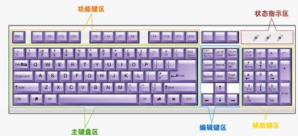

电脑操作基础
作者：TeliuTe 来源：基础教程网
使用键盘（本课图片主要来自金山打字通2003） 返回 下一课
键盘是我们输入文字的主要工具，通过学习你会发现，掌握了键盘指法后，电脑操作也变得非常简单了；

1、键盘的作用
键盘主要输入汉字、字母、数字等，以及回车键确定，Tab键切换，方向键移动等；
2、键盘的布局
键盘主要是字母键构成，二十六个英文字母排成了三排，因此手指要会上下灵活伸缩，
最长的键是空格键，带一个横箭头标着Enter的是回车键，回车往往有确定、下一行、允行的意思，
左上角是ESC键，一般是取消、退出的作用；
四个排成“┻”字形的方向键可以移动光标，光标是一个一闪一闪的黑色小竖线，也叫插入点， 有这条竖线才能输入文字；

3、键盘操作
键盘操作的基本要领是双手、盲打，双手是指左手管左半边键盘，右手管右半边键盘 ，以G和H为分界线，
盲打是指字母的位置都背下来了，输入的时候眼睛看着屏幕，指头自个儿击键，不用眼睛帮忙找键；

4、练习步骤
1)先把二十六个字母背下来，就像背古诗一样，先第二排“ASDF，JKL;”，再第一排“QWERT，YUIOP”，后第三排“ZXCVBNM”，要求一口气背一句，滚瓜烂熟；
2）手指排队，左手的食指放在F键上其他三个指头依次往后，拇指侧面轻轻挨在空格键上，手指自然弯曲，手心是空心的，
右手食指先放在J键上，然后其他几个指头依次排列，拇指侧面轻轻挨着空格键，手的重量落在手臂 上，
手腕别动伸展一下手指，再收回来，放好后抬头挺胸，坐直了，脚放平，
姿势要领是：抬头、挺胸、卡腰，两个关节肘挨着腰，把肩往下沉一沉，放松些不要影响呼吸，看着非常挺拔；

3）先练习中间的八个基准建，ASDF和JKL;八个键， 先想好是哪个键，然后是哪个手指，然后击键，
击键要有弹性速度要快，轻巧地按下弹起，其他指头别乱动，处于休息状态，击键完毕回来排队；
练习：
1）熟记中间一排键的位置和顺序，熟练背下来；
2）每天练习十分钟八基准建练习，每次操作电脑前先练习一篇指法，打好基础，开始慢慢输入正确盲打，然后逐步提高(本网站有配套指法练习)；
3）空闲时间在桌子上练练手指，经常活动一下小指，提高力度和弹性；
附：在线指法练习
本节学习了键盘输入的基本方法，指法练习大约总共要二十个小时，如果你成功的完成了练习，请继续学习下一课内容；
本教程由86团学校TeliuTe制作|著作权所有，不得用于商业用途 基础教程网：http://teliute.org美丽的校园……
转载和引用本站内容，请保留作者和本站链接。